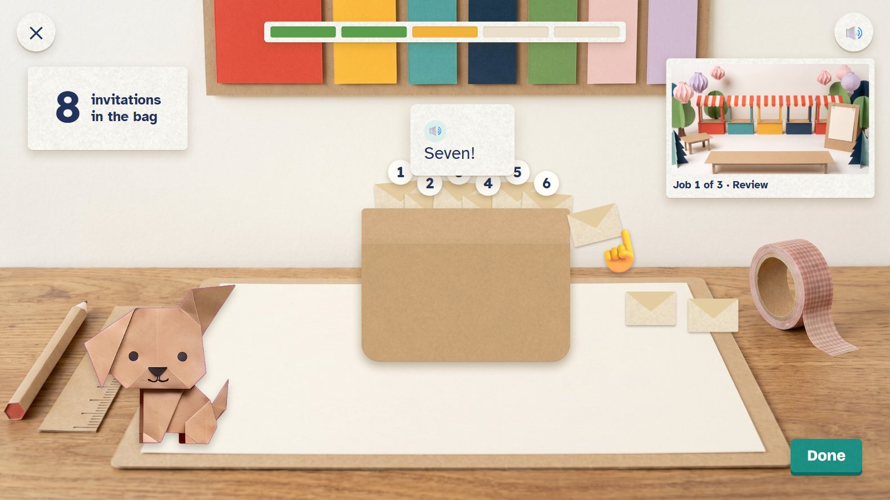
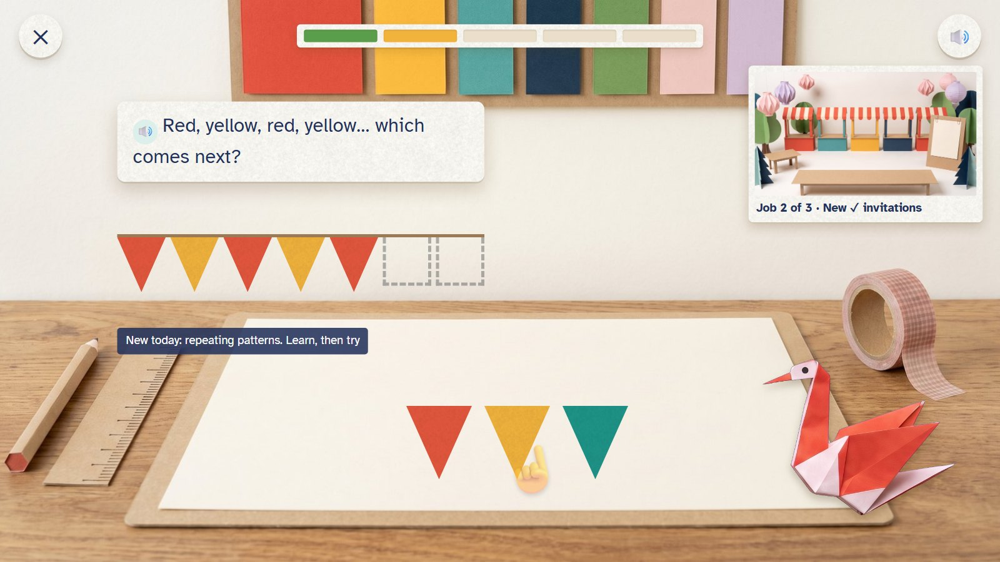
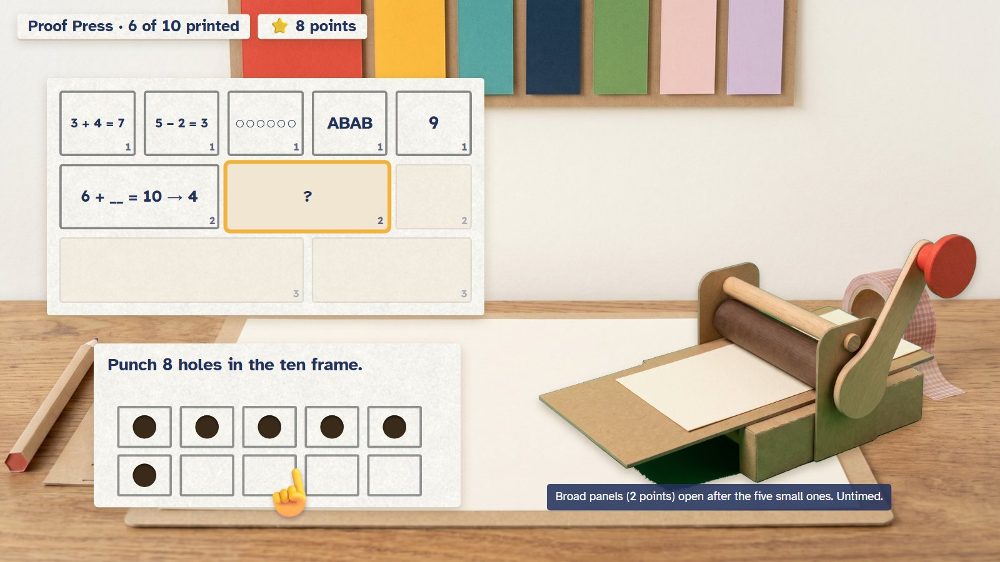
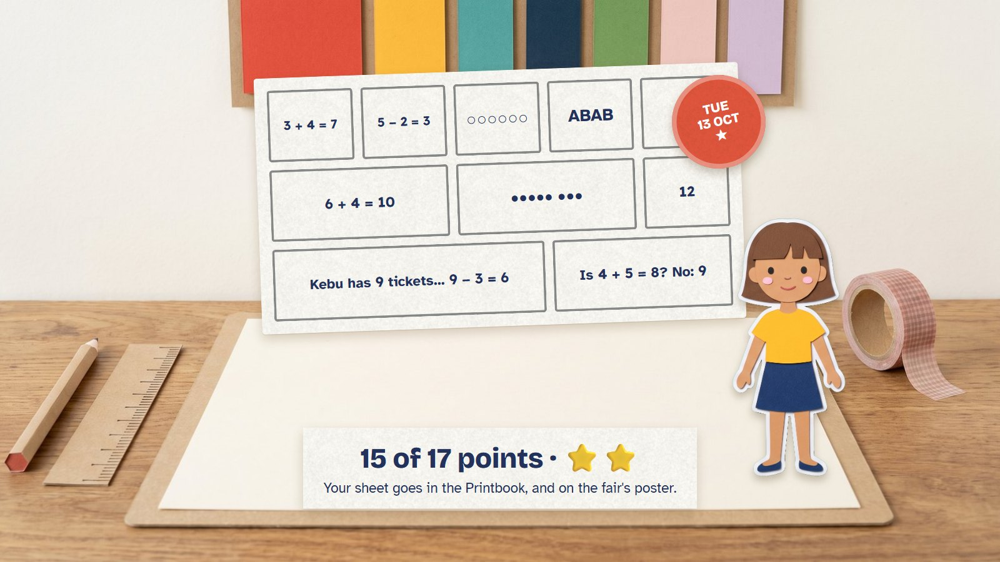
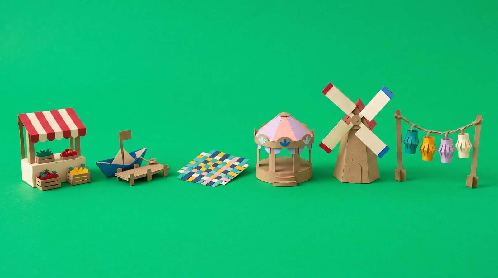

A day in Paper Town: the letter
Every day starts with one envelope from Tavu. Inside is a request from a friend (open the paper fair, plan a birthday, launch the boats) with three missing pieces and a blank poster. Three short jobs make the pieces, and the Proof Press, the daily challenge, prints the poster. Then the event plays with the child's own work in it, and a new piece goes into the child's own paper town.
One purpose for the whole day, instead of a list of stops. Ava is 6.
One day, eight moments

1Today's letter
Ava's paper town on the craft table. Tavu the crane flies in and drops today's envelope. The child pulls the red strip to open it (or taps).
🔊 A letter for you, Ava! Pull the strip to open it.
One envelope, one purpose for the day. Beside it: My skills, Make freely and Dress-up.

2The request
The letter unfolds into a picture of the paper fair with four things missing: the invitations, the bunting, the table mats and the poster.
🔊 Help us open the paper fair! Four things are missing.
The skill engine picks the maths first; the story is fitted around it, never the other way round.

3Job 1: review
Count out 8 invitations into the post bag. Nefu helps. The picture of the fair waits in the corner.
🔊 Seven!
A skill that was due again. Five rounds, about two minutes.

4Job 2: something new
Today's new skill, repeating patterns: red, yellow, red, yellow… the child picks the next flag for the bunting.
🔊 Red, yellow, red, yellow… which comes next?
The invitations are already in the fair's picture (top right). Job 3 practises the same skill on the table mats.

5The Proof Press
The daily challenge: a sheet of ten panels. Five small ones (1 point each), then three broad ones (2 points), then two framed ones (3 points). The child picks the panel.
Untimed. A first miss gets a tip, a second miss the working and a fresh twin. Only first tries earn points.

6The printed sheet
All ten panels printed: 15 of 17 points, two stars. The sheet, Ava's doll and today's seal go into her Printbook, and onto the fair's poster.
The collectible is made of the child's own work. Nothing comes out of a mystery box.

7The event
The paper fair opens: the bunting, the invitations, the mats and the printed poster are all Ava's. About 8 seconds.
🔊 The paper fair is open!
Every job adds its piece to the picture as it finishes; the event plays when all four are done.

8A piece for the town
A new fair stall, with Ava's patterned mats on it, goes into her own paper town. She chooses where.
🔊 Where shall the stall go?
One piece a day; a bigger one from the Big Build every seventh day.
What happens, and why
| What | Why | |
|---|---|---|
| 0 · Warm-up | Optional: the Band (ages 5+) or Peekaboo Flaps (3–6). About a minute. | Facts the child already knows, kept quick. |
| 1 · Review job | A skill that is due again. | Reviews come back after 1, 3, 7 and 21 days. |
| 2 · Learning job | The next step of today's skill. | At most one new skill a day. |
| 3 · Practice job | The same skill in another scene. | Seeing it twice, in two ways. |
| 4 · Proof Press | The daily challenge: ten panels, 17 points. | A daily check of what is learned, the harder panels worth more. |
| 5 · The event and a town piece | The request comes true with the child's own work in it. | The day ends with something made. |
About 9 to 13 minutes, by age
| Age | Warm-up | Review | New | Practise | Proof Press | Letter and event | The day |
|---|---|---|---|---|---|---|---|
| 3–4 | 1 min | 1.5 min | 1.5 min | 1.5 min | 3 min, two halves of five | 0.5 min | about 9 min |
| 5–6 | 1 min | 1.5 min | 2 min | 2 min | 4 min (two halves if wanted) | 0.5 min | about 11 min |
| 7–8 | 1 min | 2 min | 2 min | 2 min | 4 min | 0.5 min | about 11.5 min |
| 9–10 | 1 min | 2 min | 2.5 min | 2.5 min | 5 min | 0.5 min | about 13.5 min |
Guesses to check with children, not deadlines. The youngest are offered a pause after each job, so the day can be done in several sittings. A half-done letter waits exactly as it was.
The Proof Press
| Rule | |
|---|---|
| The sheet | Ten panels: 5 small (1 point each, familiar learned work), 3 broad (2 points each: a missing part or a new picture of the same idea), 2 framed (3 points each: checking someone's answer, or a real-life use). 17 at most. |
| Order | The child picks any panel in the open group. The broad panels open after the five small ones, the framed pair after those. |
| Tasks | Made with the paper moves: punch a number, arrange a shape, finish a woven mat, fold a fraction. The sheet fills with the child's work. |
| Tries | First miss: the attempt stays and a tip comes. Second miss: the working, then a fresh twin. A helped panel still prints, with 0 points. |
| Stars | 10 of 10 first tries = 3 stars, 8–9 = 2, 6–7 = 1, otherwise a tick for finishing. Points and stars never buy anything. |
| The collectible | All ten done, whatever the score: a dated print in the Printbook, made of the child's own sheet, their doll and the day's seal (31 seal designs, one for each day of the month). |
| Which maths | Only learned skills, from up to three parts of maths. Two days at 14 of 17 or more can suggest a harder level of what is already learned. |
| Ages 3–4 | Five big panels at a time: the first half familiar, the second a little deeper. A pause between the halves. |
The town the child builds

Every day
One small piece after the event. 36 small designs, in different colours and with the child's own patterns.
Every 7th day
A Big Build: three building requests using learned maths (about 4 minutes, untimed) and one big piece: a bridge, a lighthouse, a stage. 12 big designs.
A year
365 small and 52 big pieces. The town shows 12 at a time; older parts of town are kept in a book the child can open.
Missed days: the home screen shows one envelope to continue; older letters wait quietly in the letter box. No streak to lose, no "overdue", no perfect month. Parents see the skills and steps behind every job, first tries, help used, review dates and time, and the Proof Press points out of 17, kept apart from the finished jobs.
Questions
- The letter: is one request a day, made from three jobs and the Proof Press, a better shape for the day than a road of stops?
- The Proof Press: let the child choose the panel within each group (as here), or a fixed order?
- The town: can children move their pieces anywhere, or do pieces have set places?